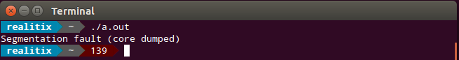

def fib(int n): cdef int a = 0 cdef int b = 1 while b < n: print(b) a, b = b, a + b
from ctypes import cdll, Structure, c_int, c_double
lib = cdll.LoadLibrary('./vector.so')
# ctypes Point structure
class Point(Structure):
_fields_ = [('x', c_int), ('y', c_int)]
# Initialize Point[2] argument
points_array = (Point * 2)((1, 2), (3, 4))
# Get vector_size from library
vector_size_fn = lib.vector_size
vector_size_fn.restype = c_double
# Call vector_size with ctypes
size = vector_size_fn(points_array)
print('out = {}'.format(size))from cffi import FFI
ffi = FFI()
ffi.cdef("int printf(const char *format, ...);")
C = ffi.dlopen(None)
arg = ffi.new("char[]", "world")
C.printf("hello %s\n", arg)from cffi import FFI
ffibuilder = FFI()
ffibuilder.set_source("_example",
r"""#include <sys/types.h>
#include <pwd.h>
""")
ffibuilder.cdef("""
struct passwd {
char *pw_name;
...;
};
struct passwd *getpwuid(int uid);
""")
if __name__ == "__main__":
ffibuilder.compile(verbose=True)
├── converters.c -> 423
├── custom_functions.c -> 103
├── custom_structs.c -> 59
├── extension_functions.c -> 32
├── functions.c -> 8
├── header.c -> 11
├── init.c -> 68
├── init_unions
│ ├── vkclearcolorvalue.c -> 69
│ └── vkclearvalue.c -> 36
├── macros.c -> 111
├── main.c -> 122
├── objects.c -> 99
└── jfilter.py -> 542
Total: 1683vulkan.template.py -> 340PyModule_AddIntConstant(module, {{name}}, {{value}});{{name}} = {{value}}def _new(ctype, **kwargs):
_type = ffi.typeof(ctype)
ptrs = {}
for k, v in kwargs.items():
# convert tuple pair to dict
ktype = dict(_type.fields)[k].type
if ktype.kind == 'pointer':
ptrs[k] = _cast_ptr(v, ktype)
init = dict(kwargs, **{k: v for k, (v, _) in ptrs.items()})
return ffi.new(_type.cname + '*', init)[0]├── _cffi_build
│ ├── pyshaderc_build.py
│ └── shaderc.h
├── pyshaderc
│ └── __init__.py
└── setup.pyffi = FFI()
with open('shaderc.h') as f:
ffi.cdef(f.read())
ffi = FFI()
with open('shaderc.h') as f:
source = f.read()
ffi.set_source('_pyshaderc', source, libraries=['shaderc_combined'])
if __name__ == '__main__':
ffi.compile()
from pyshaderc._pyshaderc import ffi, lib
def compile_into_spirv(raw, stage, suppress_warnings=False):
# initialize compiler
compiler = lib.shaderc_compiler_initialize()
# compile
result = lib.shaderc_compile_into_spv(compiler, raw, len(raw), stage, b"main")
length = lib.shaderc_result_get_length(result)
output_pointer = lib.shaderc_result_get_bytes(result)
tmp = bytearray(length)
ffi.memmove(tmp, output_pointer, length)
spirv = bytes(tmp)
return spirv
setup(
...
cffi_modules=["_cffi_build/pyshaderc_build.py:ffi"]
)